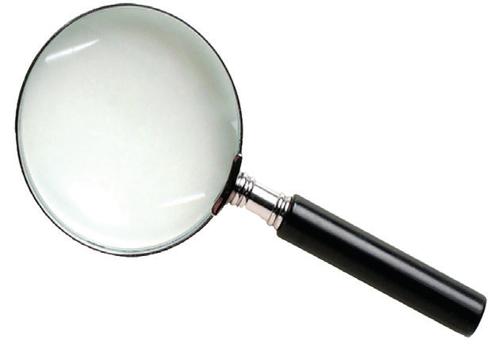
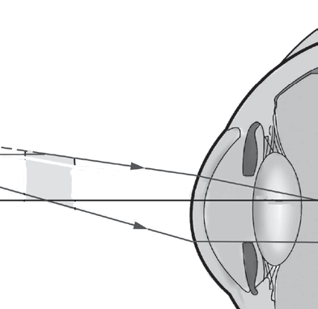

Structure of a simple microscope
A simple microscope is made of a biconvex lens normally held by a round-shaped frame with a handle. It can therefore be hand-held and moved according to the user’s needs. A simple microscope is sometimes called a magnifying glass or simply a magnifier. Figure 6.1 shows a simple microscope.

Mode of action of a simple microscope
When using a simple microscope, you can simply put it over the object to be viewed. For the comfort of the observer’s eye, the position of the magnifying glass with respect to the object is adjusted so that the object is at the focal point of the lens. This produces a virtual, upright, and magnified image of the object. Note that the largest image can be formed on the retina of the naked eye when the object is at the near point (D ≈ 25 cm). Therefore, for the clear and maximum size of the image to be formed on the retina, the magnifier must have a focal length of approximately 25 cm. The image is formed at infinity when the position of the magnifying glass or the object itself is adjusted so that the object is at the focal point of the magnifying glass. In this way, the eyes see a magnified image such that smaller features can be observed. Figure 6.2 illustrates the action of a simple microscope.

(a)
Angle subtended by the object
Object at the near point
Image formed on the retina
(b)
Angle subtended by the object
Magnifier
Image not at the near point
Image formed on the retina